富士家の6つの特徴とお約束
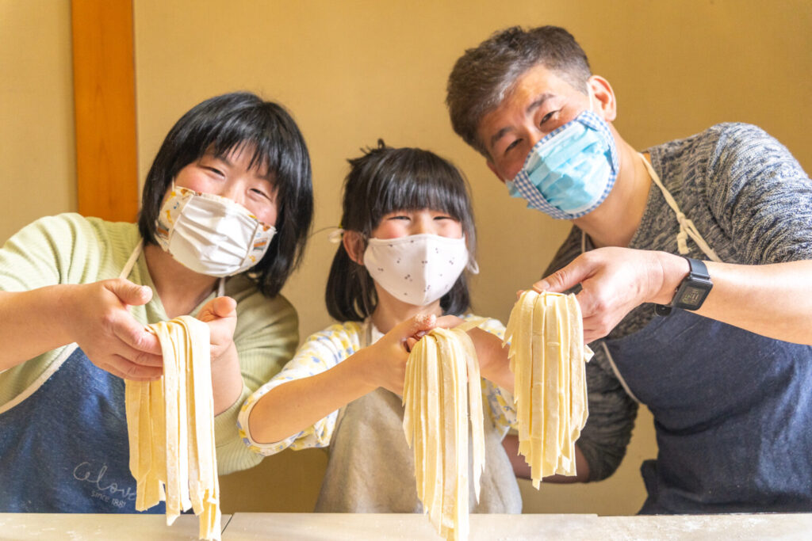
①初心者でも安心
体験教室では、料理経験が全くない方やお子様でも楽しんでいただけるような流れになっております。当店のスタッフが最後までサポートいたします。
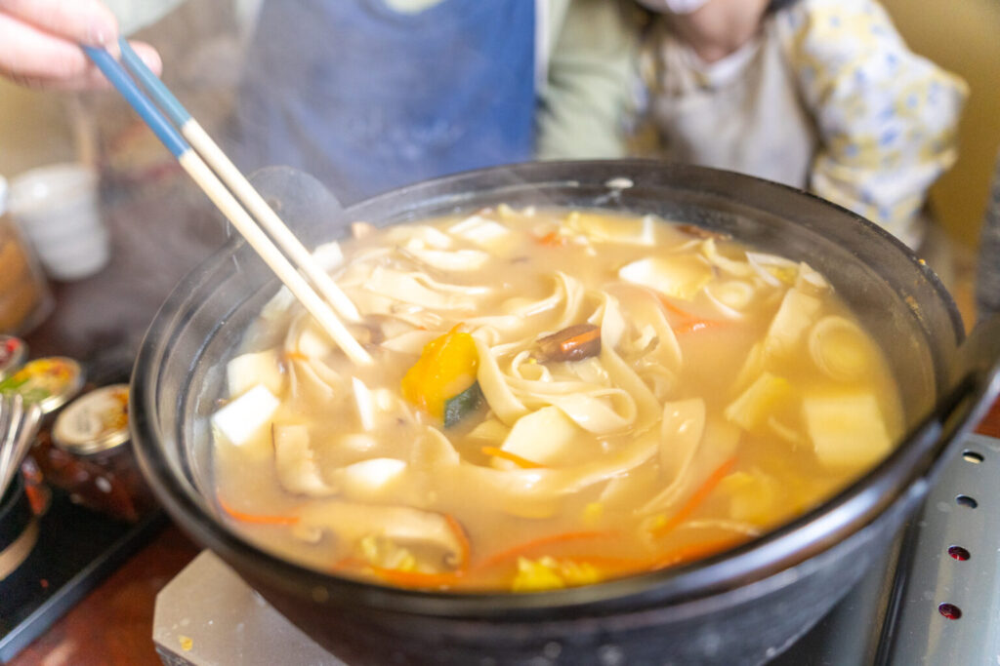
➁出来立てを食べます。
自分で作ったほうとうや忍野八海そばなどをその場で食べていただきます。ご希望のお客様には当店自慢のとり天やチャーシュー丼も用意しております。

③１名～団体のお様まで対応可能
催行人数は１人～団体のお客様も受け付けております。特に子供連れのご家族や友達同士、修学旅行での参加はかなり盛り上がります。ワイワイ楽しい時間を過ごしましょう。
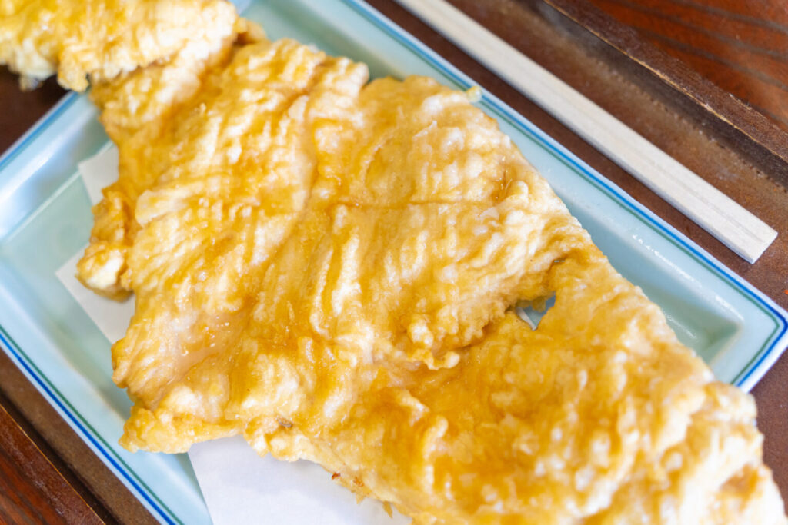
➃充実の一品料理をご用意
富士家では、体験メニュー以外にも当日ご注文頂ける食事やドリンクメニューをご用意しております。当店名物のとり天、吉田のミニうどんなどがございます。また、ランチ営業も行っておりますのでご希望の方は追加でご注文頂けます。
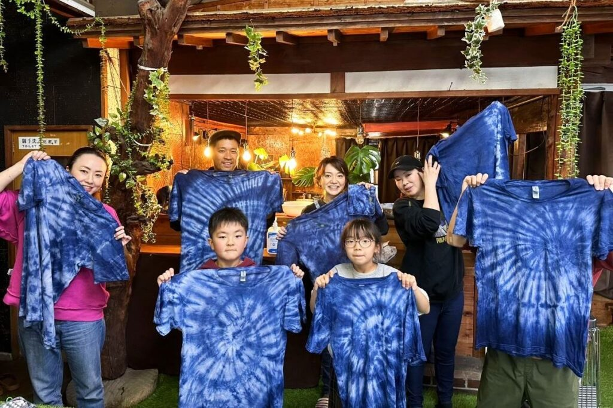
➄天然染め体験もオススメ
当店は山梨の郷土料理を作る以外にも、墨や藍を使った天然染め体験や山梨名物の旨辛調味料や薬膳七味の調合体験を行っています。麺打ち体験とセットでご予約いただければ割引価格でご案内しております。
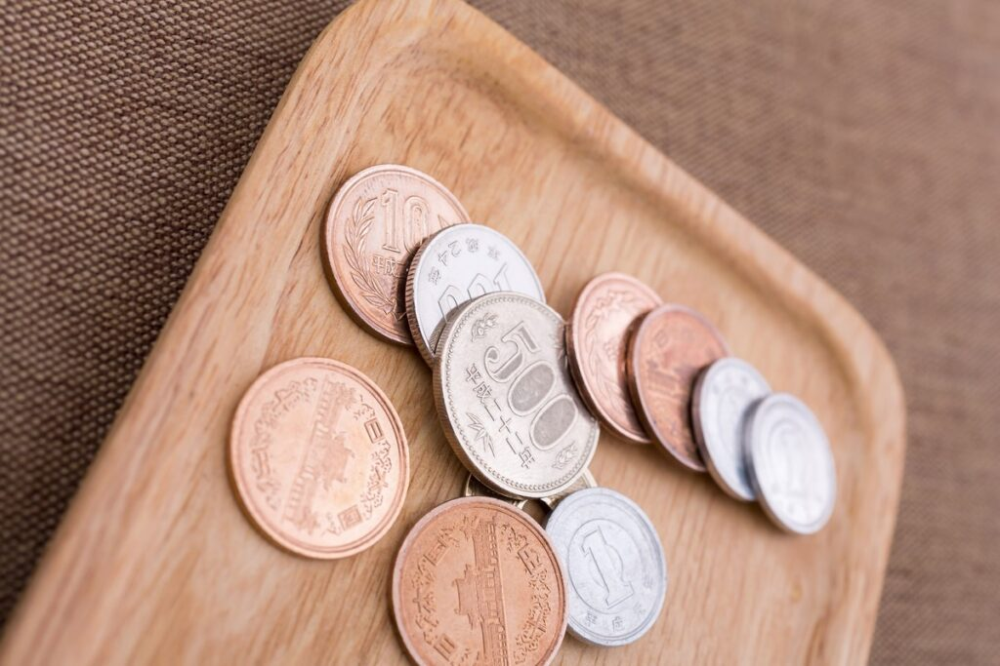
⑥明朗会計
お客様へのHPに記載してある料金以外の追加の請求などは御座いませんのでご安心ください。各種クレジットカード・PayPayにも対応しております。
体験の流れ

1. 会場に到着
体験開始時間の10分前にはお越し下さい。到着次第、店内にお入り下さい。

2. 調理とそばの説明
そば作り体験を始める前に当店の紹介ビデオをご視聴いただき、忍野八海そばについてのお話をさせていただきます。
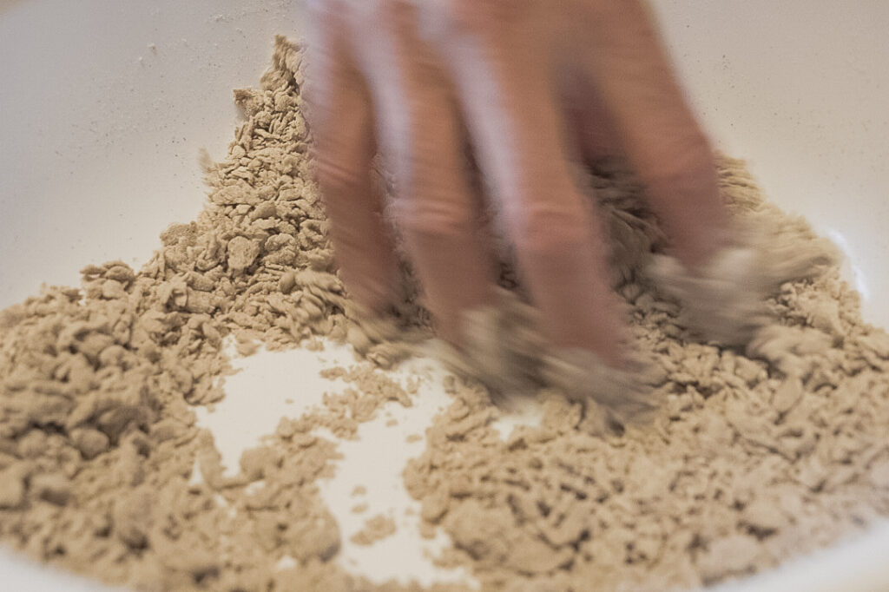
3. 混ぜ
当店では「そば粉１：つなぎ１」で蕎麦を作ります。そば粉150gを計った後、水を入れて素早くかき混ぜ、小さいダマをたくさん作ります。混ぜ続けると生地の色が濃くなってきます。水分が全体に行き渡ってきたら生地を一つにまとめていきます。
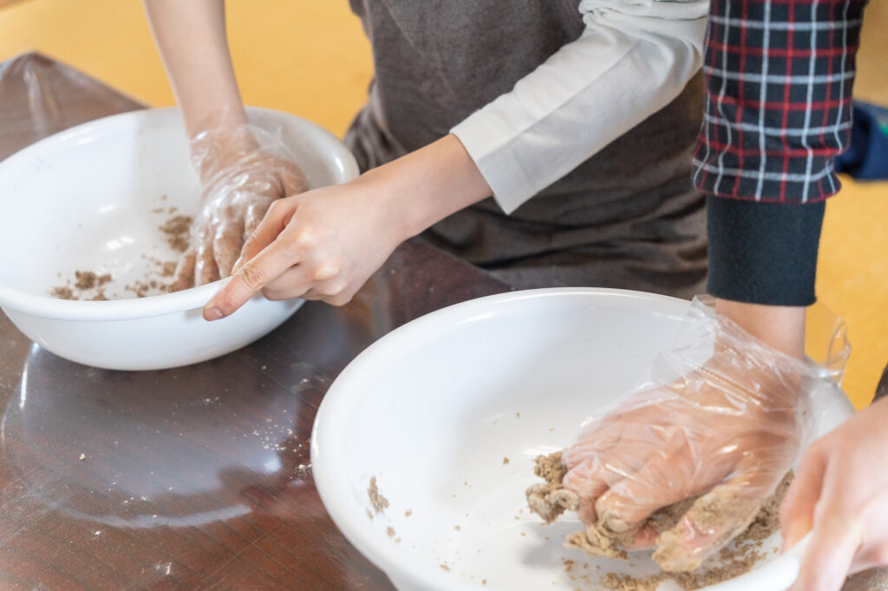
4. 捏ね
生地を捏ねる際は、手のお腹を使って体重を掛けながら一つにまとめます。生地の表面に白い粉が残っている状態ですと、捏ねが不十分です。生地の表面全体がクリーミーになるまで力強く捏ねていきます。特にお子様ですと力が足りないこともあるので大人の方と協力しながら進めましょう。
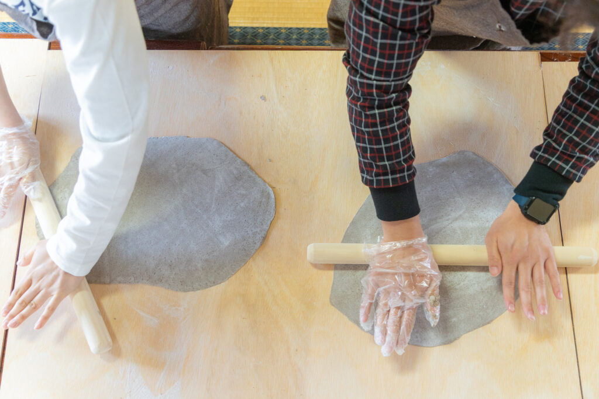
5. 延ばし
生地が完成したら生地の表面に打ち粉をふりかけます。表面が白くなったら麺棒を使って生地を薄く伸ばしていきます。生地の形は正方形をイメージして延ばしていきましょう。どこから切っても麺の長さが均等になるよう、出来る限り正方形の形で延ばしていきます。
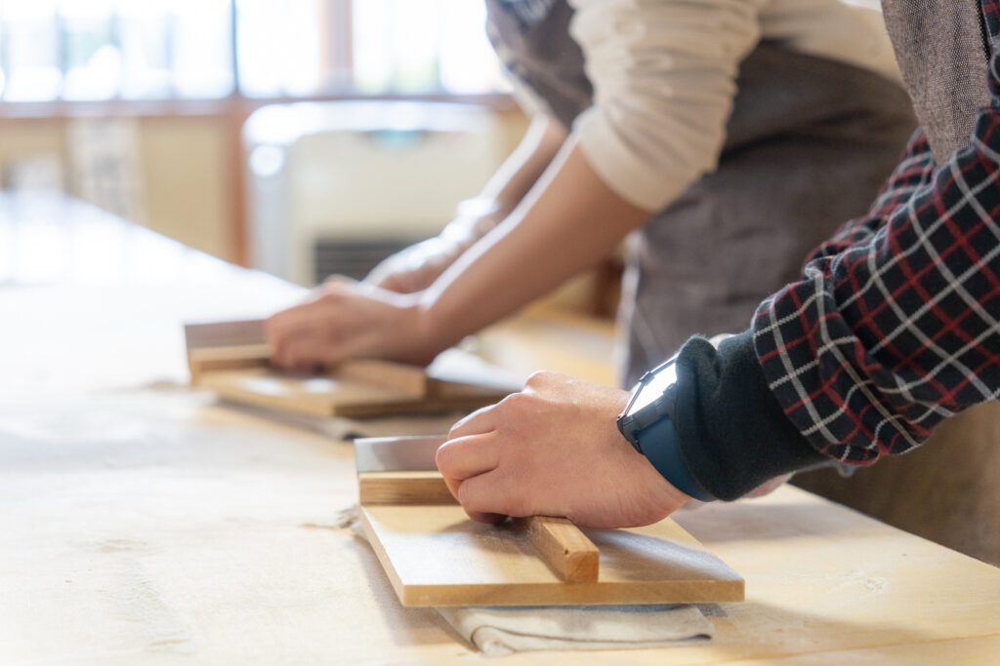
6. 切り
生地を薄く延ばせたら、包丁の幅に収まるように生地を畳みます。畳み終えたら、こま板と包丁を使って切っていきます。一番難しい工程です。細く切るのは大変ですが、慣れてきたらテンポを上げて、出来たら10分以内に終わるように頑張りましょう。
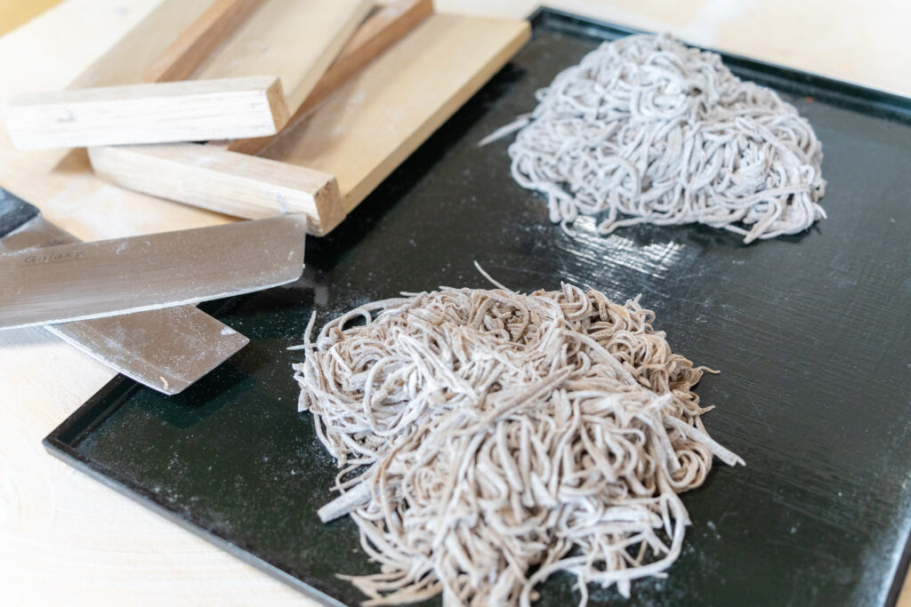
7. 記念撮影
蕎麦の麺が完成したら、蕎麦と一緒に写真をお撮りします。記念撮影用の文字入り板もございますのでご希望の方はご利用下さい。お水と氷はセルフサービスになりますので必要な方はカウンターにあるドリンクコーナーからお取りください。
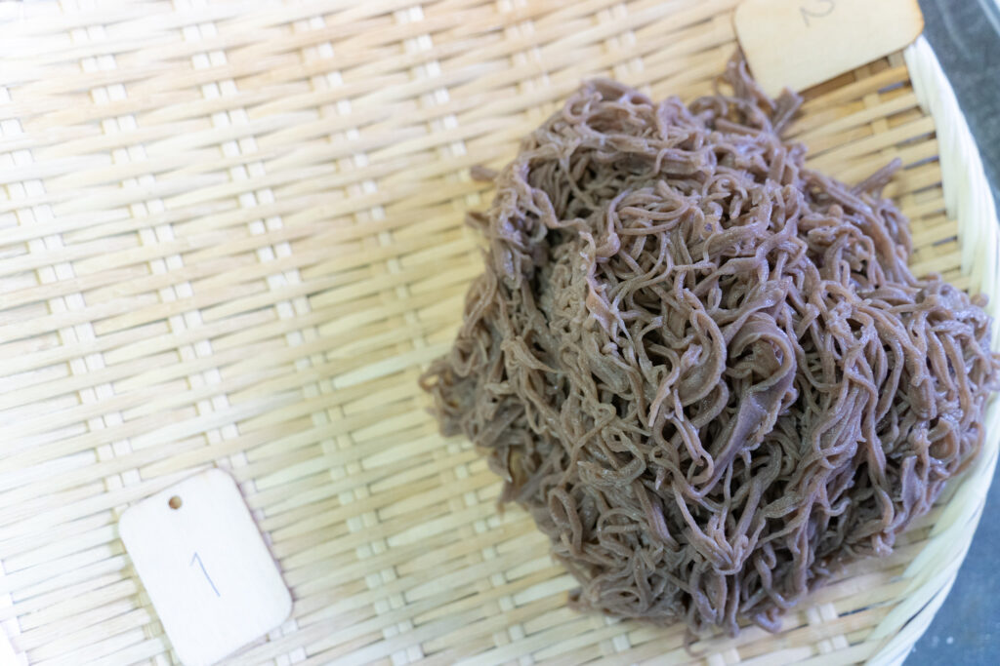
8. 茹で
2分～3分ほど茹でます。つゆ・ネギ・海苔・ワサビはまとめてご提供しますのでお客様で取り分けて頂きますようお願いします。つゆは割っていないものと薄める用のお水をご提供しますので調整の方お願いいたします。
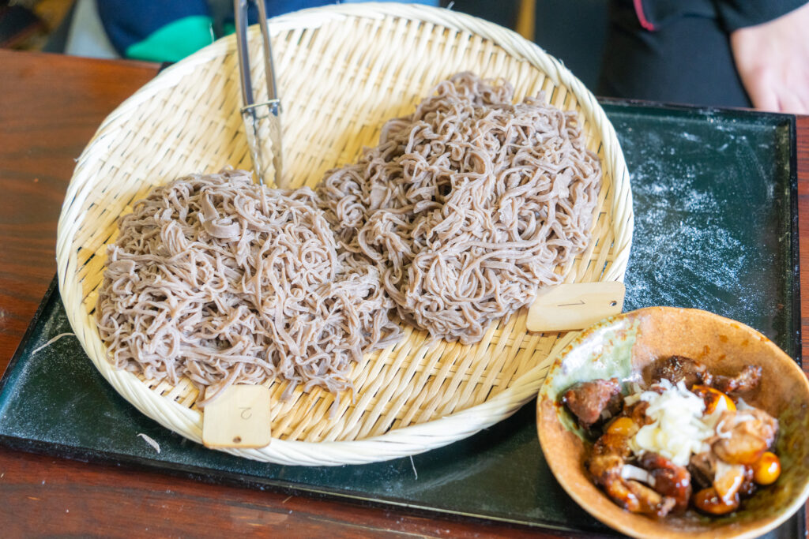
9. お取り分け
手打ちそばの完成です。お蕎麦は大きめのざるに乗せてお席にお持ちいたします。お一人様ずつせいろをお渡ししますので、菜箸・トング等で取り分けて頂きますようお願いいたします。手打ち体験ならではの麺の違いをお楽しみください。麺とお客様のお写真も撮らせて頂きますのでお気軽にスタッフまでお申し付けください。
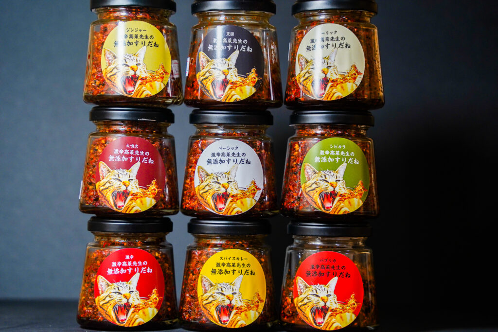
10. 当店おすすめのすりだね
すりだねとは、富士吉田市にある吉田のうどん屋に必ず置いてある名物の辛味調味料のことです。お蕎麦にはワサビもお付けしますが、すりだねも相性が良いので、是非お試しください。富士家のすりだねはオリジナルで60種類ご用意しております。辛さが苦手な方でも食べられるように辛さ控えめのものもございますのでお気軽にどうぞ。
料金表
※ほうとうにはかぼちゃ、ジャガイモ、ネギなど約6種類が入っています。吉田のうどん・そばにもトッピングをお付けしております。
必ずお1人様１つの麺類体験をお選びください。オプションのみのご注文はできかねますのでご了承ください。
なるべくグループで同じセットやメニュー・オプションを注文いただけると当日の進行がスムーズです。
バラバラのセットをご注文いただくとお時間が長引いてしまう可能性もございますのでご了承ください。
食べきれなかった分は全品お持ち帰りいただけますので、ご希望の方にはお持ち帰り用の容器をお渡しいたします。お気軽にスタッフまでお申し付けください。
4歳以下のお子様無料
大人気のセットメニュー
| 藍染体験セット | |
|---|---|
| 麺作り体験 + 藍染体験セット お好きな麺打ち体験と、大人気藍染体験のセットです。手作業による一人ひとりの感覚、キレイに染めようという想いによって、オリジナルの染め物が生まれていきます。素材の値段が別途500円～発生いたします。 |
|
| 七味作り体験セット | |
| 麺作り体験 + 七味作り体験セット お好きな麺打ち体験と、天然素材を合わせて作るオリジナル七味作り体験のセットです。七味唐辛子は日本の伝統的な薬膳唐辛子ですが、当店ではお客様の好みに合わせてミックス唐辛子を作る体験を行っております。専用の瓶もプレゼントしております。 |
|
| 山梨土産作り体験セット | |
| 麺作り体験 + すりだね作り体験セット お好きな麺打ち体験と、富士五湖エリアの万能辛味調味料すりだねをオリジナルブレンドで作る体験のセットです。すりだねは富士吉田の名物唐辛子です。ゴマやゴマ油をミックスさせたレシピが基本ですが、お客様の好みに合わせてオリジナルすりだねを作っていただけます。 |
|
| 黒蜜きな粉作り体験セット | |
| 麺作り体験 + 黒蜜きな粉餅体験 お好きな麺打ち体験と人気のお菓子作り体験がセットになりました。 |
|
| 名物土産2品体験セット | |
| すりだね作り体験＋黒蜜きな粉餅体験 1人気のお土産作り体験がセットになりました。黒蜜きな粉餅はその場で食べてもOK。 |
単品・オプションメニュー
単品メニューはグループ内で組み合わせることも可能ですが、お待たせする可能性がございます。皆様同じ体験ですとスムーズです。
| 単品麺作り体験 | |
|---|---|
| 郷土料理ほうとう作り | ￥3,500 |
| 二郎系ラーメン作り体験 | ￥3,500 |
| 豚骨ラーメン作り体験 | ￥3,500 |
| 富士吉田名物吉田のうどん作り | ￥3,500 |
| 忍野八海そば作り | ￥3,500 |
| セルフほうとう作り体験 | ￥2,500 |
| 体験オプション | |
| お土産麺作り(追加) | ￥700 |
| 黒蜜きな粉餅作り | ￥700 |
お食事なしの体験
お客様自身が打った麺や調合した七味を山梨旅行のお土産にしてみませんか？
体験教室富士家ではお食事なしの体験も承っております。
お時間がない方、お食事は済まされてきた方におすすめです。
お食事なし体験の特徴
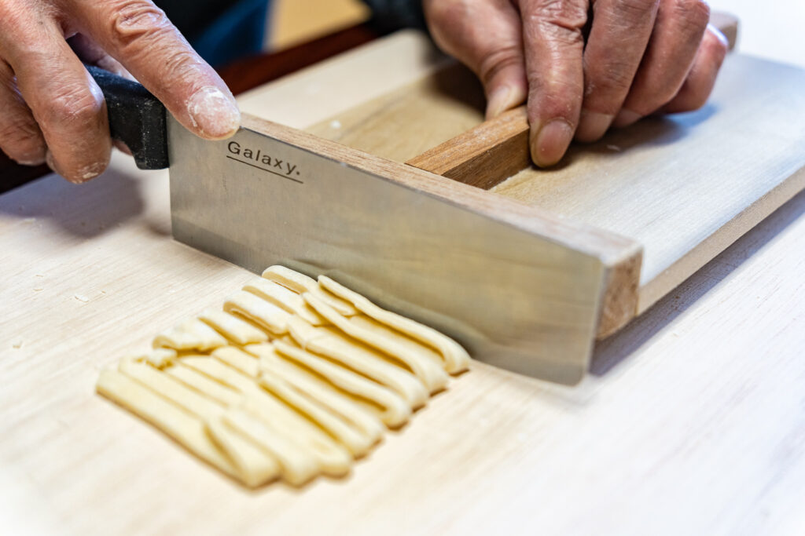
お食事なしの麺作り体験は、お食事はありませんがしっかり楽しんでいただける内容となっております。
特徴①短時間で楽しめる
通常の体験ですと90分から120分の所要時間となりますが、お持ち帰りの体験は60分以内に終了しますのでお時間ない方にオススメです。
特徴②お家で楽しめる
ご家族や友人などと帰宅後に一緒にうどんの味を楽しむことができ、最高のお土産になります。
特徴③しっかり体験
お食事をすること以外は通常の体験と変わりありませんのでご安心ください。
こんな方にオススメ
- 時間がないけど体験したい方
- 前後に食事の予定がある方
- お土産を作りたい方
- ご家族などに食べてもらいたい方
料金
| お食事なし麺作り体験プラン | |
|---|---|
| お土産麺作り体験 麺2人前 |
￥2,500 |
| お土産麺＋すりだね作り体験セット 麺2人前 + すりだね作り体験セット |
→￥3,980 |
| お土産麺＋七味作り体験セット 麺2人前 + お土産七味作り体験セット |
→￥3,980 |
| 山梨土産・七味作り体験プラン | |
| 七味作り体験 | ￥1,700 |
| 名物すりだね体験 | ￥1,700 |
| すりだね作り＋黒蜜きな粉餅体験 | ￥2,200 |
| 染物体験プラン | |
| 染物体験体 | ￥3,200 |
| 服染体験＋お土産麺セット 染物＋麺作り体験セット |
→￥5,500 |
| 染物体験＋すりだね作り体験セット 染物+ すりだね作り体験セット |
→￥4,500 |
| 染物体験＋七味作り体験セット 染物 + お土産七味作り体験セット |
→￥4,500 |
体験メニューの紹介
ほうとう作り体験
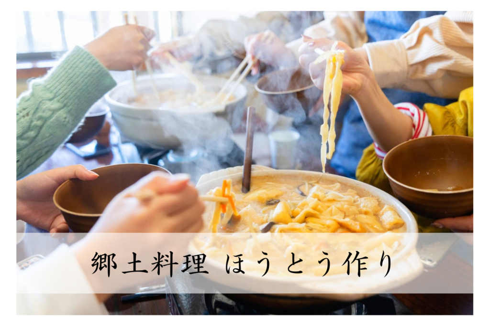
ほうとうとは、山梨県を中心によく食べられる郷土料理のことです。小麦粉を練りざっくりと切った太くて長い麺を、カボチャなど野菜と共に味噌仕立ての汁で煮込むのが特徴です。
山梨の郷土料理ほうとうを詳しく知る
特製激辛ほうとう
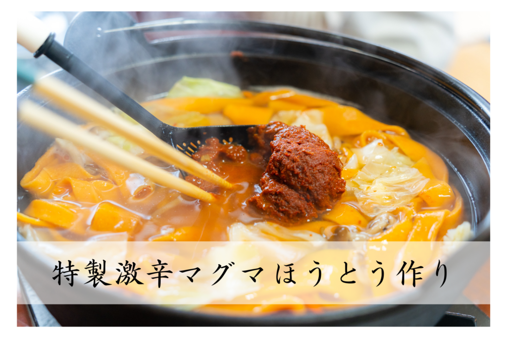
特製激辛ほうとうは、世の激辛好きのために考案した人気のメニューです。富士家オーナーが探し出した世界各地の激辛唐辛子を混ぜて作ったオリジナル味噌で味付けしたほうとうです。唐辛子を混ぜ込んだ真っ赤な麺は写真映えもします。ぜひお試しください。
吉田のうどん作り体験
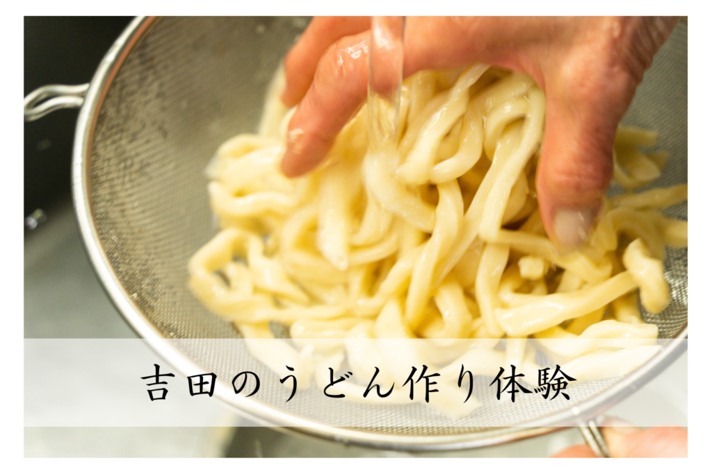
吉田のうどんとは、山梨県富士吉田市や河口湖近辺でよく食べられる郷土料理のうどんのことです。
河口湖は富士山の裾野にあり年間平均気温１１℃と大変寒く、稲作に不適合な地域だったため大麦・小麦・粟などが主食でした。今でこそ名物になっていますが、元々は富士吉田や河口湖の庶民的な家庭料理だったそうです。
吉田のうどんを詳しく知る
忍野八海そば作り体験
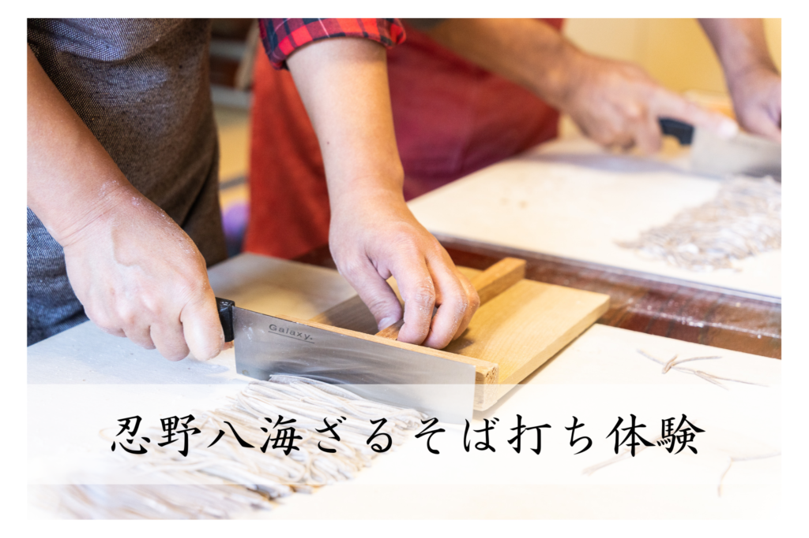
秋から冬にかけては「そば」が旬の季節になります。秋の「新そば」が出回り、年末の「年越しそば」で最盛期を迎えます。歳時記でもそばは冬の季語として記されています。
忍野八海そばを詳しく知る
黒蜜きな粉餅作り体験（平日限定オプション）
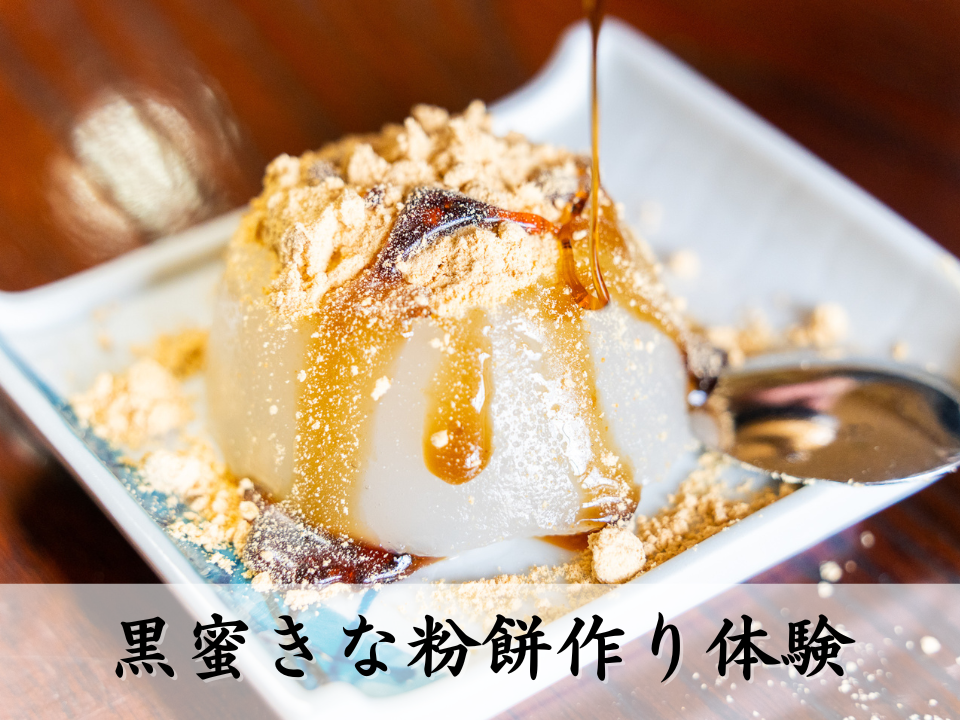
黒蜜ときな粉をかけてたべる黒蜜きな粉餅をつくる体験です。大人の方からお子様まで楽しめるメニューとなっております。
一品料理の紹介
万能辛味調味料 すりだね
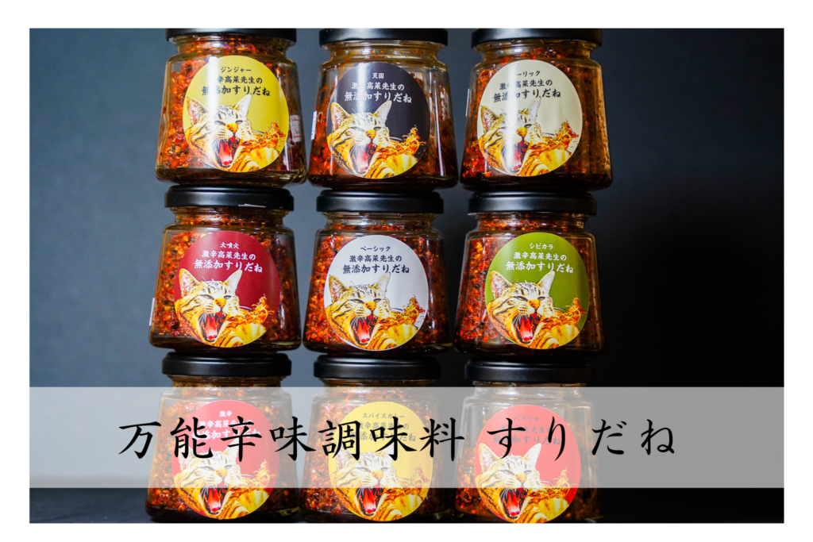
富士家では山梨名物である万能辛味調味料「すりだね」の専門店としても営業しております。すりだねは主に吉田のうどん屋さんやほうとう屋さんに必ず置いてある辛味です。通常、一種類しかないすりだねですが、富士家ではこだわりのスパイスや無添加にこだわった調味料を加えた、富士家独自のすりだねを全14種ご用意しております。ご旅行のお土産や差し入れにもぴったりです。（体験後のお食事の際に試食をお出しします。）
山梨の地酒
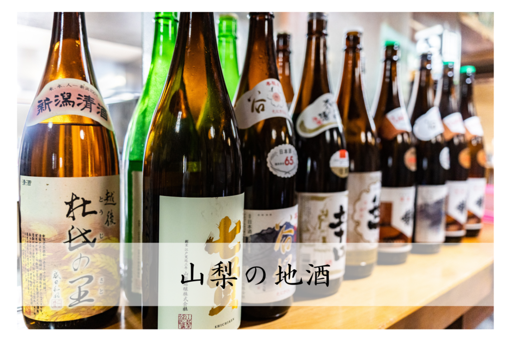
山梨県産の地酒を含む、時間無制限飲み放題（1000円）も行っております。（※ビールは別料金になります。）
一杯単位でもご注文いただけます。
「山梨の地酒と言えばコレ!」という日本酒を取り揃えました。山梨の米と水を100％使った認定酒をお楽しみください。
体験中、体験後のお食事の時間などお好きなタイミングでスタートが可能です。
参加されたお客様の様子
参加されたお客様を一部ご紹介させていただきます。
修学旅行のお客様
大学生のお客様
友人同士のお客様
お子様連れのお客様

海外からのお客様


お客様の声・感想


{kind=link}
{kind=link}
{kind=link}
{kind=link}
{kind=link}
{kind=link}
{kind=link}
{kind=link}
{kind=link}
{kind=link}
{kind=link}
{kind=link}
{kind=link}
よくあるご質問
お客様からよくいただく質問ですのでぜひ一度お読みください。
ご不明な点がある方はお問い合わせよりお願いいたします。
- 所要時間はどのくらいですか？
- 60分～90分となります。お客様の人数やセットメニューによって前後いたします。
- 英語での対応は可能ですか？
- はい。スタッフは英語での対応もできますので外国からのお客さまもお気軽にご利用ください。
- ネイルをしていても体験はできますか？
- はい。ご希望のお客さまにはビニール手袋を使っていただいておりますのでスタッフまでお申しつけください。
- クレジットカードは使えますか？
- はい。クレジットカードもご利用いただけます。（VISA/Mastercard/AmericanExpressに限らせていただきます）
- 富士吉田河口湖店は河口湖からはどのくらい時間がかかりますか？
- お車でおよそ5分です。
- 富士吉田河口湖店の最寄り駅からは徒歩何分かかりますか？
- 最寄駅は富士急行線河口湖駅で、徒歩12分ほどです。
- 富士吉田河口湖店に駐車場はありますか？
- はい。店舗前に無料駐車場がございますのでご利用下さい。
- 富士吉田河口湖店には観光バスも駐車できますか
- 観光バスも店舗前の駐車場をご利用頂けます。
- 予約は必須ですか？
- 予約優先性としており、ご予約無しでもご来店いただけます。事前にご予約をご希望の方はお手数ですが、お問い合わせページから電話またはLINEにてご連絡ください。
- 夜中や早朝でも予約できますか？
- はい。こちらのお問い合わせLINEから24時間受け付けております。時間は気にせずご連絡ください。
- 後片付けもする必要がありますか？
- 後片付けはスタッフが行います。体験後に食事をして終了となります。
- 食べきれない場合は持ち帰ることはできますか？
- 食べきれなかった分は全品お持ち帰りいただけますので、ご希望の方にはお持ち帰り用の容器をお渡しいたします。お気軽にスタッフまでお申し付けください。
- 体験時間はどのくらいかかりますか？
- お食事込みでおよそ1時間半～2時間を予定しております。黒蜜きな粉餅作り体験は＋5分～10分程度、七味作り体験は+30分程度です。お客様の人数や当日の状況によっては終了時間が多少前後しますので予めご了承ください。
- 用意するものや持ち物は何が必要ですか？
- 材料、道具はすべてこちらで用意してあります。お客様にお持ちいただく物は特にございません。ただ、小さなお子様用のエプロンはありませんので、必要であればお客さまでご持参ください。
- ヴィーガン・ベジタリアンでもたべれますか？
- はい。ご心配な場合は事前にご相談ください。
- どんな方が参加されますか？料理が得意な方ばかりでしょうか・・・？
- ファミリーやお友達のお客様、若い方も多くいらっしゃいます。料理は普段しないという方も多くいらっしゃいますが、スタッフがしっかり作り方をお伝えしますので安心してください。体験に参加したお客様の様子はこちらのギャラリーからご覧いただけます。
- 初心者でも参加できますか？
- はい。料理未経験の方でも楽しんでいただけます。一部包丁や油を使う工程がありますがスタッフがついていますのでご安心ください。
- 小さな子供が一緒でも大丈夫ですか？
- はい。お子様と一緒に体験されるお客さまも多くいらっしゃいます。火や包丁を使いますのでその時だけ注意してください。
- スマホやビデオで撮影しても構いませんか？
- はい。ぜひ思い出を映像や画像に残してください。SNSやブログなどへのUPも歓迎しております。
予約までの流れ
- ≪お申込みページにアクセス≫
- LINEまたはお電話にてご予約受付ております。
- ≪参加人数や日程を送信≫
- 当日予約も受け付けておりますがお客様の人数によっては対応出来ない場合がございます。
- ≪ご予約確定≫
- そば体験の他にも、黒蜜きな粉餅作り体験や七味作り体験などのオプションもご用意しておりますので、ご希望でしたらお知らせください。
- ≪現地にてお支払い≫
- お支払は現金またはカードにて承っております。
代表的な日本料理そばとは
代表的な日本料理の一つ、そば。日本の伝統料理ではあるものの、身近な料理なだけにその歴史や由来に詳しい方も少なくないのではないでしょうか。そばの歴史と由来、そして山梨県を代表する「忍野八海そば」についても解説していきます。